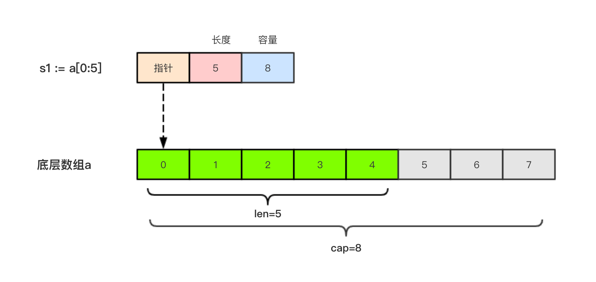
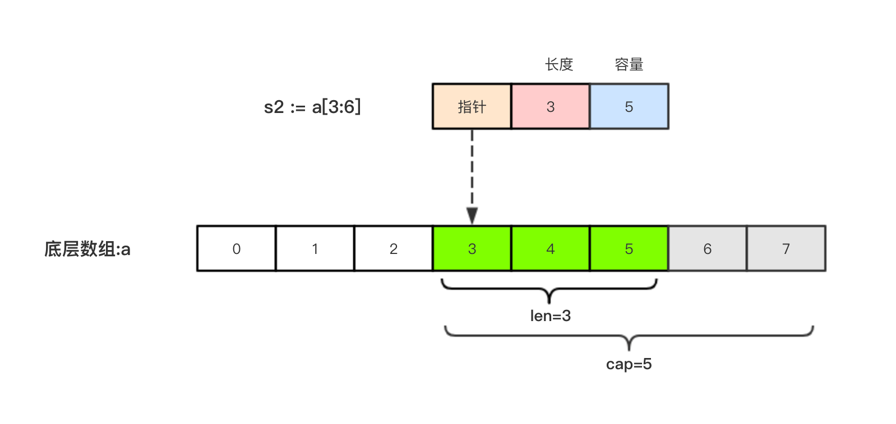

本文主要介绍Go语言中切片（slice）及它的基本使用。
1.引子
因为数组的长度是固定的并且数组长度属于类型的一部分，所以数组有很多的局限性。 例如：
func arraySum(x [3]int) int{
sum := 0
for _, v := range x{
sum = sum + v
}
return sum
}
这个求和函数只能接受[3]int类型，其他的都不支持。 再比如，
a := [3]int{1, 2, 3}
数组a中已经有三个元素了，我们不能再继续往数组a中添加新元素了。
2.切片
切片（Slice）是一个拥有相同类型元素的可变长度的序列。它是基于数组类型做的一层封装。它非常灵活，支持自动扩容。
切片是一个引用类型，它的内部结构包含地址、长度和容量。切片一般用于快速地操作一块数据集合。
2.1 切片的定义
声明切片类型的基本语法如下：
var name []T
其中，
- name:表示变量名
- T:表示切片中的元素类型
举个例子：
func main() {
// 声明切片类型
var a []string //声明一个字符串切片
var b = []int{} //声明一个整型切片并初始化
var c = []bool{false, true} //声明一个布尔切片并初始化
var d = []bool{false, true} //声明一个布尔切片并初始化
fmt.Println(a) //[]
fmt.Println(b) //[]
fmt.Println(c) //[false true]
fmt.Println(a == nil) //true
fmt.Println(b == nil) //false
fmt.Println(c == nil) //false
// fmt.Println(c == d) //切片是引用类型，不支持直接比较，只能和nil比较
}
2.1.1 切片的长度和容量
切片拥有自己的长度和容量，我们可以通过使用内置的len()函数求长度，使用内置的cap()函数求切片的容量。
2.1.2 切片表达式
切片表达式从字符串、数组、指向数组或切片的指针构造子字符串或切片。它有两种变体：一种指定low和high两个索引界限值的简单的形式，另一种是除了low和high索引界限值外还指定容量的完整的形式。
2.1.2.1 简单切片表达式
切片的底层就是一个数组，所以我们可以基于数组通过切片表达式得到切片。 切片表达式中的low和high表示一个索引范围（左包含，右不包含），也就是下面代码中从数组a中选出1<=索引值<4的元素组成切片s，得到的切片长度=high-low，容量等于得到的切片的底层数组的容量。
func main() {
a := [5]int{1, 2, 3, 4, 5}
s := a[1:3] // s := a[low:high]
fmt.Printf("s:%v len(s):%v cap(s):%v\n", s, len(s), cap(s))
}
输出：
s:[2 3] len(s):2 cap(s):4
为了方便起见，可以省略切片表达式中的任何索引。省略了low则默认为0；省略了high则默认为切片操作数的长度:
a[2:] // 等同于 a[2:len(a)]
a[:3] // 等同于 a[0:3]
a[:] // 等同于 a[0:len(a)]
注意：
对于数组或字符串，如果0 <= low <= high <= len(a)，则索引合法，否则就会索引越界（out of range）。
对切片再执行切片表达式时（切片再切片），high的上限边界是切片的容量cap(a)，而不是长度。常量索引必须是非负的，并且可以用int类型的值表示;对于数组或常量字符串，常量索引也必须在有效范围内。如果low和high两个指标都是常数，它们必须满足low <= high。如果索引在运行时超出范围，就会发生运行时panic。
func main() {
a := [5]int{1, 2, 3, 4, 5}
s := a[1:3] // s := a[low:high]
fmt.Printf("s:%v len(s):%v cap(s):%v\n", s, len(s), cap(s))
s2 := s[3:4] // 索引的上限是cap(s)而不是len(s)
fmt.Printf("s2:%v len(s2):%v cap(s2):%v\n", s2, len(s2), cap(s2))
}
输出：
s:[2 3] len(s):2 cap(s):4
s2:[5] len(s2):1 cap(s2):1
2.1.2.2 完整切片表达式
对于数组，指向数组的指针，或切片a(注意不能是字符串)支持完整切片表达式：
a[low : high : max]
上面的代码会构造与简单切片表达式a[low: high]相同类型、相同长度和元素的切片。另外，它会将得到的结果切片的容量设置为max-low。在完整切片表达式中只有第一个索引值（low）可以省略；它默认为0。
func main() {
a := [5]int{1, 2, 3, 4, 5}
t := a[1:3:5]
fmt.Printf("t:%v len(t):%v cap(t):%v\n", t, len(t), cap(t))
}
输出结果：
t:[2 3] len(t):2 cap(t):4
完整切片表达式需要满足的条件是0 <= low <= high <= max <= cap(a)，其他条件和简单切片表达式相同。
2.1.3 使用make()函数构造切片
我们上面都是基于数组来创建的切片，如果需要动态的创建一个切片，我们就需要使用内置的make()函数，格式如下：
make([]T, size, cap)
其中：
- T:切片的元素类型
- size:切片中元素的数量
- cap:切片的容量
举个例子：
func main() {
a := make([]int, 2, 10)
fmt.Println(a) //[0 0]
fmt.Println(len(a)) //2
fmt.Println(cap(a)) //10
}
上面代码中a的内部存储空间已经分配了10个，但实际上只用了2个。 容量并不会影响当前元素的个数，所以len(a)返回2，cap(a)则返回该切片的容量。
2.1.4 切片的本质
切片的本质就是对底层数组的封装，它包含了三个信息：底层数组的指针、切片的长度（len）和切片的容量（cap）。
举个例子，现在有一个数组a := [8]int{0, 1, 2, 3, 4, 5, 6, 7}，切片s1 := a[:5]，相应示意图如下。

切片s2 := a[3:6]，相应示意图如下：

2.1.5 判断切片是否为空
要检查切片是否为空，请始终使用len(s) == 0来判断，而不应该使用s == nil来判断。
2.2 切片不能直接比较
切片之间是不能比较的，我们不能使用==操作符来判断两个切片是否含有全部相等元素。 切片唯一合法的比较操作是和nil比较。 一个nil值的切片并没有底层数组，一个nil值的切片的长度和容量都是0。但是我们不能说一个长度和容量都是0的切片一定是nil，例如下面的示例：
var s1 []int //len(s1)=0;cap(s1)=0;s1==nil
s2 := []int{} //len(s2)=0;cap(s2)=0;s2!=nil
s3 := make([]int, 0) //len(s3)=0;cap(s3)=0;s3!=nil
所以要判断一个切片是否是空的，要是用len(s) == 0来判断，不应该使用s == nil来判断。
2.3 切片的赋值拷贝
下面的代码中演示了拷贝前后两个变量共享底层数组，对一个切片的修改会影响另一个切片的内容，这点需要特别注意。
func main() {
s1 := make([]int, 3) //[0 0 0]
s2 := s1 //将s1直接赋值给s2，s1和s2共用一个底层数组
s2[0] = 100
fmt.Println(s1) //[100 0 0]
fmt.Println(s2) //[100 0 0]
}
2.4 切片遍历
切片的遍历方式和数组是一致的，支持索引遍历和for range遍历。
func main() {
s := []int{1, 3, 5}
for i := 0; i < len(s); i++ {
fmt.Println(i, s[i])
}
for index, value := range s {
fmt.Println(index, value)
}
}
2.5 append()方法为切片添加元素
Go语言的内建函数append()可以为切片动态添加元素。 可以一次添加一个元素，可以添加多个元素，也可以添加另一个切片中的元素（后面加…）。
func main(){
var s []int
s = append(s, 1) // [1]
s = append(s, 2, 3, 4) // [1 2 3 4]
s2 := []int{5, 6, 7}
s = append(s, s2...) // [1 2 3 4 5 6 7]
}
**注意：**通过var声明的零值切片可以在append()函数直接使用，无需初始化。
var s []int
s = append(s, 1, 2, 3)
没有必要像下面的代码一样初始化一个切片再传入append()函数使用，
s := []int{} // 没有必要初始化
s = append(s, 1, 2, 3)
var s = make([]int) // 没有必要初始化
s = append(s, 1, 2, 3)
每个切片会指向一个底层数组，这个数组的容量够用就添加新增元素。当底层数组不能容纳新增的元素时，切片就会自动按照一定的策略进行“扩容”，此时该切片指向的底层数组就会更换。“扩容”操作往往发生在append()函数调用时，所以我们通常都需要用原变量接收append函数的返回值。
举个例子：
func main() {
//append()添加元素和切片扩容
var numSlice []int
for i := 0; i < 10; i++ {
numSlice = append(numSlice, i)
fmt.Printf("%v len:%d cap:%d ptr:%p\n", numSlice, len(numSlice), cap(numSlice), numSlice)
}
}
输出：
[0] len:1 cap:1 ptr:0xc0000a8000
[0 1] len:2 cap:2 ptr:0xc0000a8040
[0 1 2] len:3 cap:4 ptr:0xc0000b2020
[0 1 2 3] len:4 cap:4 ptr:0xc0000b2020
[0 1 2 3 4] len:5 cap:8 ptr:0xc0000b6000
[0 1 2 3 4 5] len:6 cap:8 ptr:0xc0000b6000
[0 1 2 3 4 5 6] len:7 cap:8 ptr:0xc0000b6000
[0 1 2 3 4 5 6 7] len:8 cap:8 ptr:0xc0000b6000
[0 1 2 3 4 5 6 7 8] len:9 cap:16 ptr:0xc0000b8000
[0 1 2 3 4 5 6 7 8 9] len:10 cap:16 ptr:0xc0000b8000
从上面的结果可以看出：
append()函数将元素追加到切片的最后并返回该切片。- 切片numSlice的容量按照1，2，4，8，16这样的规则自动进行扩容，每次扩容后都是扩容前的2倍。
append()函数还支持一次性追加多个元素。 例如：
var citySlice []string
// 追加一个元素
citySlice = append(citySlice, "北京")
// 追加多个元素
citySlice = append(citySlice, "上海", "广州", "深圳")
// 追加切片
a := []string{"成都", "重庆"}
citySlice = append(citySlice, a...)
fmt.Println(citySlice) //[北京 上海 广州 深圳 成都 重庆]
2.6 切片的扩容策略
可以通过查看$GOROOT/src/runtime/slice.go源码，其中扩容相关代码如下：
newcap := old.cap
doublecap := newcap + newcap
if cap > doublecap {
newcap = cap
} else {
if old.len < 1024 {
newcap = doublecap
} else {
// Check 0 < newcap to detect overflow
// and prevent an infinite loop.
for 0 < newcap && newcap < cap {
newcap += newcap / 4
}
// Set newcap to the requested cap when
// the newcap calculation overflowed.
if newcap <= 0 {
newcap = cap
}
}
}
从上面的代码可以看出以下内容：
- 首先判断，如果新申请容量（cap）大于2倍的旧容量（old.cap），最终容量（newcap）就是新申请的容量（cap）。
- 否则判断，如果旧切片的长度小于1024，则最终容量(newcap)就是旧容量(old.cap)的两倍，即（newcap=doublecap），
- 否则判断，如果旧切片长度大于等于1024，则最终容量（newcap）从旧容量（old.cap）开始循环增加原来的1/4，即（newcap=old.cap,for {newcap += newcap/4}）直到最终容量（newcap）大于等于新申请的容量(cap)，即（newcap >= cap）
- 如果最终容量（cap）计算值溢出，则最终容量（cap）就是新申请容量（cap）。
需要注意的是，切片扩容还会根据切片中元素的类型不同而做不同的处理，比如int和string类型的处理方式就不一样。
2.7 使用copy()函数复制切片
首先我们来看一个问题：
func main() {
a := []int{1, 2, 3, 4, 5}
b := a
fmt.Println(a) //[1 2 3 4 5]
fmt.Println(b) //[1 2 3 4 5]
b[0] = 1000
fmt.Println(a) //[1000 2 3 4 5]
fmt.Println(b) //[1000 2 3 4 5]
}
由于切片是引用类型，所以a和b其实都指向了同一块内存地址。修改b的同时a的值也会发生变化。
Go语言内建的copy()函数可以迅速地将一个切片的数据复制到另外一个切片空间中，copy()函数的使用格式如下：
copy(destSlice, srcSlice []T)
其中：
- srcSlice: 数据来源切片
- destSlice: 目标切片
举个例子：
func main() {
// copy()复制切片
a := []int{1, 2, 3, 4, 5}
c := make([]int, 5, 5)
copy(c, a) //使用copy()函数将切片a中的元素复制到切片c
fmt.Println(a) //[1 2 3 4 5]
fmt.Println(c) //[1 2 3 4 5]
c[0] = 1000
fmt.Println(a) //[1 2 3 4 5]
fmt.Println(c) //[1000 2 3 4 5]
}
2.8 从切片中删除元素
Go语言中并没有删除切片元素的专用方法，我们可以使用切片本身的特性来删除元素。 代码如下：
func main() {
// 从切片中删除元素
a := []int{30, 31, 32, 33, 34, 35, 36, 37}
// 要删除索引为2的元素
a = append(a[:2], a[3:]...)
fmt.Println(a) //[30 31 33 34 35 36 37]
}
总结一下就是：要从切片a中删除索引为index的元素，操作方法是a = append(a[:index], a[index+1:]...)
3.练习题
1.请写出下面代码的输出结果。
func main() {
var a = make([]string, 5, 10)
for i := 0; i < 10; i++ {
a = append(a, fmt.Sprintf("%v", i))
}
fmt.Println(a)
}
["" "" "" "" ““0 1 2 3 4 5 6 7 8 9]
2.请使用内置的sort包对数组var a = [...]int{3, 7, 8, 9, 1}进行排序（附加题，自行查资料解答）。
package main
import (
"fmt"
"sort"
)
func main() {
var a = [...]int{3, 7, 8, 9, 1}
// convert from fixed array to slice
a_slice := a[:]
// sort slice by built-in sort function
sort.Ints(a_slice)
// output sorted result
fmt.Println(a_slice)
}